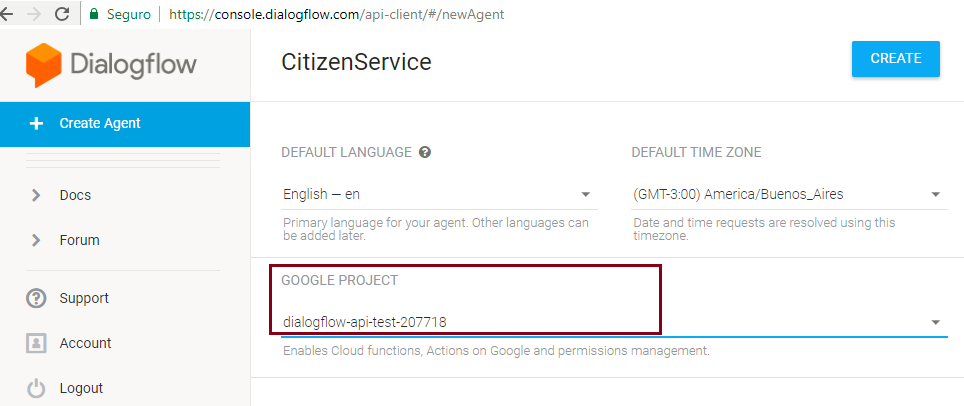

Configuring Google Dialogflow for the Chatbot Generator
This article introduces the steps to use the Chatbot Generator with Dialogflow. Below is a summary of the steps that should be followed:
Create a project in Google CloudGo to this link. Select the list of projects, and create a New Project. Enable the "Dialogflow API" service in your projectIn the project's Dashboard, go to APIs & Services -> Library In the search bar, look for Dialogflow. Select it and click the Enable button.
Get the credentials for accessing the APIThe following images show step by step how to create a Service Account to work with the Dialogflow APIs: Next, click on the option to create a service account: Find the new account in the list of service accounts and click on edit (in the Actions menu). In the edit screen, create a new key: Select the JSON type: The generated JSON is downloaded as shown below: The content of this JSON must be entered in the Google Cloud JSON Credentials property. Create an Agent in Dialogflow that is related to the Google Cloud projectGo to the Dialogflow website to create a new Agent. Make sure you select the right Project (defined in the previous step) before pressing the create Agent button. Note that you can create only one Agent per project.  Configure the GeneXus Chabot instance for using DialogflowEdit the Conversational Flows object and configure the NLP Provider property, Google Cloud Project property and Google Cloud JSON Credentials property. To continue, save or execute "Generate Chatbot." At this moment, GeneXus will try to synchronize your instance with the agent created in Dialogflow. It will no longer be necessary to authenticate to use Dialogflow because a service account is now used. CompatibilitySince GeneXus 17 upgrade 3, it is necessary to use the Service Account authentication mechanism because the previous mechanism is no longer supported. |


| Backlinks | |
| Chatbot Generator common errors and solutions | |
| Client Id property | Client Secret property |
| Dialogflow Agent property | Google Cloud JSON Credentials property |
| Google Cloud Project property |